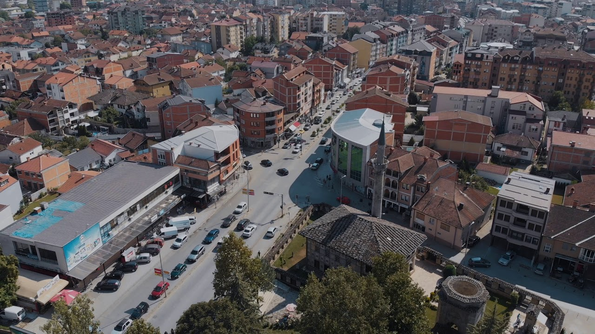

Tetovë (maqedonisht: Тетово/Tetovo) është qytet dhe qendër e komunës së Tetovës në Republikën e Maqedonisë. Tetova gjendet në pjesën veriperëndimore të Maqedonisë. Ajo nga veriu kufizohet me Kosovën, në lindje me Shkupin, në jug me Makedonski Brodin dhe në jugperëndim dhe perëndim me Gostivarin. Komuna e Tetovës mbulon një sipërfaqe prej 1,080 km2 në 468 metra mbi nivelin e detit, me një popullsi prej 52,915 banorë të vendosur në 92 vendbanime. Qyteti i Tetovës është selia e komunës së Tetovës. Shtrihet në pjesën e poshtme të fushës së pollogut dhe është e rrethuar me malin Malin Sharr dhe Malin e Thatë. Klima mesatare kontinentale me temperaturë mesatare vjetore reth 11.60°. Në Tetovë jetojnë 52.915 banorë, nga të cilët rreth 54% Shqiptarë, 35% Maqedonë dhe 3.5% Turk të tjerë, të vendosur në 92 vendbanime. Në vitin 2005 nga komuna e Tetovës janë ndarë edhe nëntë komuna tjera, të cilat si qendër e zhvillimit marrin Tetovën. Tetova ishte qendër ekonomike, kulturore dhe administrative që në kohrat antike ku përmendet me emrin Enea apo si e shkruan Tit Livi: Oaeneum ("In Penestiam ad Oaeneum..."). Në antikitet, Tetova ishte një kështjellë greko-romake në Ilirinë lindore, e quajtur Oaeneon (Οαίνεον), në Oeneën Latine, e vendosur në kalimin midis malit Scardus (tani Sharr) dhe lumit Artatos (më vonë i quajtur Oracha, tani Shkumbin) kontribues në lumin Axios (Αξιός) në greqisht, ose Vardar në gjuhen sllave. Ky ishte një territor ku jetonte fisi ilire i Penestët dhe përfshinte qytetet e fortifikuara Draudacum, Uskana, Divra dhe Stirbera në Pelagoni veriore. Gjetjet e ndryshme arkeologjike sugjerojnë se Tetova fillimisht ishte e banuar mijëra vjet më parë. Pranë Tetovës / Oaeneonit,është gjetur një shpatë greke të epokës miceneane dhe një statujë prej bronzi të shekullit të 6-të. PES janë gjetur, duke dalluar një prani greke që nga mulli i dytë. Pes. Më pas, Tetova-Oaeneon qeveriset nga shumë grupe etnike; Genthius Ilir i Labeateve, nga romakët, nga bizantinët, nga sllavët, nga bullgarët dhe u pushtua nga avarët. Në shekullin e 15-të, AD, Oeeneum erdhi nën sundimin osman për shekuj me radhë. Më pas, popullsia e qytetit u kthye ne islam dhe u ndërtuan shumë struktura të stilit osman, të tilla si Xhamia e Larme dhe Teqja e Baba Harabatit, të cilat ende janë dy nga monumentet më të rëndësishme të Maqedonisë në periudhën osmane. Gjatë kësaj periudhe, qyteti i përkiste Vilajetit të Kosovës,qyteti u bë armë zjarri dhe shkrirje topash, dhe u quajt Kalkandelen (që do të thotë Mburoja e shpuar); si rezultat, qyteti tërhoqi shumë punëtorë (shqiptarë, bullgarë, serbë dhe romë) dhe u rrit si qytet. Pas Luftërave Botërore, Tetova u bë pjesë e Jugosllavisë dhe më vonë e Republikës së Maqedonisë. Tetova historikisht ka qenë shtëpia e grupeve të shumta etnike, megjithatë, si shtëpia e partive të shumta politike shqiptarve etnik dhe me një popullsi në të cilën shqiptarët formojnë një shumicë, Tetova është bërë kryeqyteti dhe qendra jozyrtare[1] e një rajoni kryesisht shqiptar etnik që shtrihet në një hark nga Tetova në Strug.[2][3] Tetova ka edhe dy univerzitete:Universiteti i Evropës Juglindore,që është universiteti i tretë më i madh i Maqedonisë pas Shkupit dhe Manastirit.[4] dhe Universiteti Shtetëror i Tetovës.
